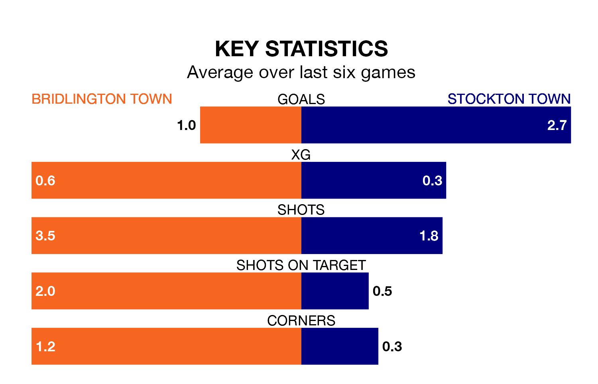

Stockton Town come to play Bridlington Town on Saturday in excellent form, having collected 16 points from their last six games.
The visitors have won five and drawn one of their last six fixtures, while Bridlington have two wins and four losses.
With 48 goals in 20 games so far this season, Stockton are the league's highest scorers with 2.4 goals per game. And they are conceding fewer than average, letting in 16 goals at a rate of 0.8 per game.
Bridlington, meanwhile, are below average scorers, with 1.3 goals per game, compared to a league average of 1.6. They have conceded 1.6 goals per game.
Stockton Town are top of the table after 20 games, of which they have won 14 and drawn three, earning 45 points.
Bridlington Town are nine places behind the away team in 10th, with eight wins and three draws putting them on 27 points.
Over the last year, Bridlington and Stockton have played each other twice. They won one each.
Their last meeting was on August 23, when Stockton won 2-0 at home.
Bridlington's last match was on January 6, a 4-2 loss against Liversedge.
Stockton beat Ossett United 3-0 last time out, also on January 6.
Updated: 11:29, 08/01/24